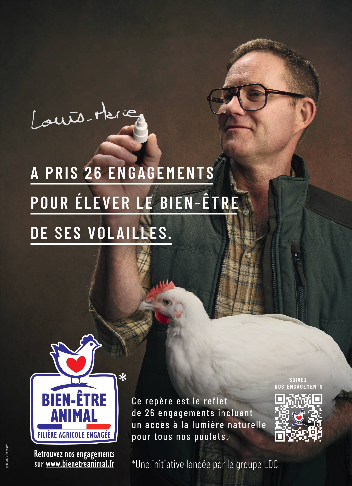
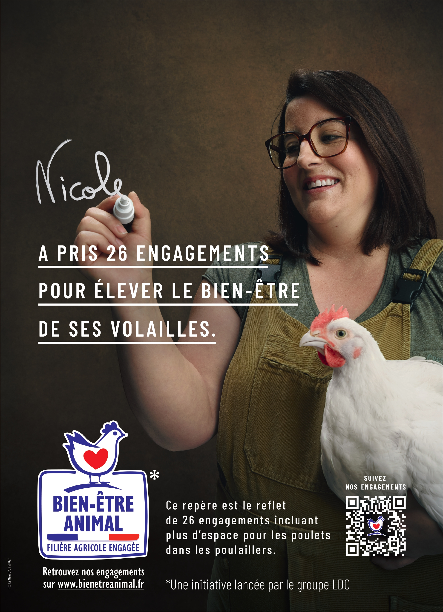
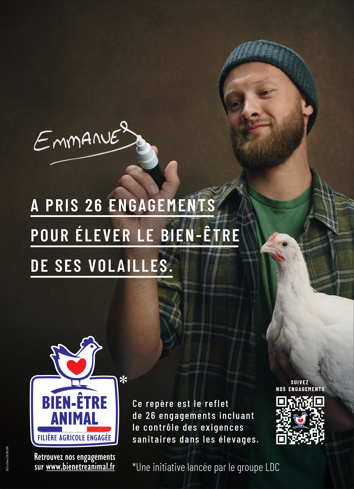
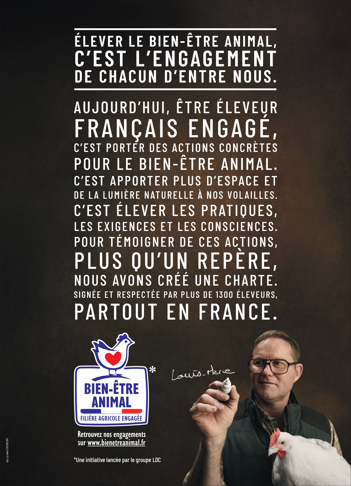

LDC — Campagne 360° — Appel d’offres
Lancement d'un repère
Prompt : Une campagne 360° pour présenter et mettre en avant un nouveau repère créé par le groupe LDC sur le bien-être de ses volailles. LDC cherche une campagne créative qui montre ces engagements.
...l
Pour cet appel d’offres, nous avons imaginé un concept qui place le nouveau repère LDC au cœur de la campagne. Ce repère symbolise les engagements concrets pris en faveur du bien-être des volailles.
...l
Nous avons choisi de faire parler celles et ceux qui mettent ces engagements en pratique chaque jour : les éleveurs de nos filières. À travers eux, la campagne gagne en authenticité et donne un visage concret aux engagements portés par LDC.
...l
L’idée est de les mettre en scène au moment de signer la charte du nouveau repère LDC. Un geste simple mais fort, qui transforme leur signature en preuve d’engagement et vient incarner la démarche de manière humaine et crédible.



